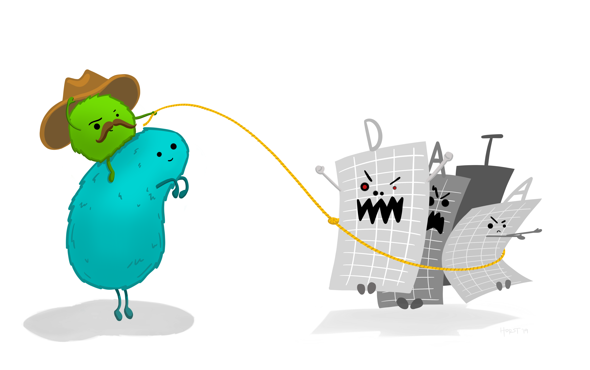
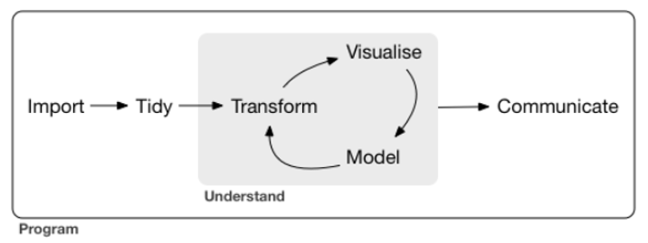
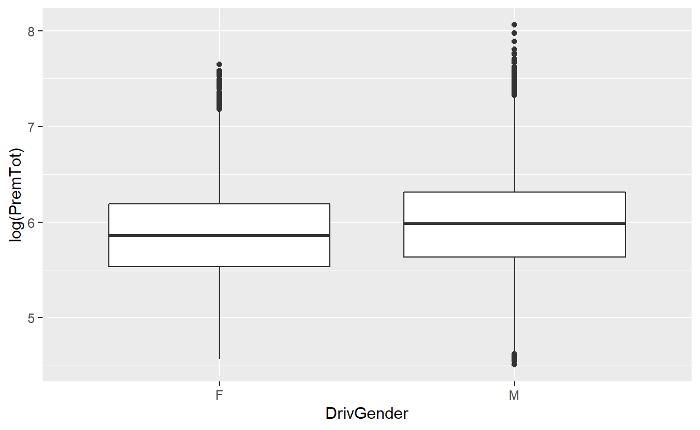

Artwork on Data Wrangling by Allison Horst
As mentioned in my last post, it has been a long journey to learn data science pretty much from scratch. I intend to share some of my learning to help others to start their data science journey as well.
Therefore, for my second post, I will share about data wrangling, which is often the essential task before building any machine learning models. Hence this post will serve as a building block of my future machine learning posts.
Also, I intend to share some of the modern data science R package and how these packages could benefit some of the analysis tasks.
Background
In R for Data Science book, Wickham & Grolemund mentioned that a typical data science project would look as following:

Extracted from R for Data Science
After importing the data, the very first step usually involves some levels of data wrangling. This is probably one of the most important steps as without a good dataset, the analysis is unlikely to be meaningful.
Golden rule > Garbage in, garbage out
A good data exploratory will help to answer the following questions (not limited to):
- Does this dataset answer the business questions (eg. does the dataset have the necessary info to predict which customers are likely to purchase in the next promotion?)?
- Are there any issues that exist in the dataset (eg. missing value, excessive categories, value range vary widely)?
- Any data transformation required? As some of the machine learning models can accept certain data types.
Through understanding the data, it will also give us some insights on whether there is any more gold we can squeeze out from data through feature engineering.
It will also provide us some clues whether the variable is a good predictor even without needing one to fit the model.
The conventional method of data wrangling is to perform data cleaning and transformation in Excel.

Photo by Mika Baumeister on Unsplash
However, this method is not very sustainable/ideal due to the following reasons:
- Excel has memory limitation and the software would keep on crashing as the data size increases
- Become a hurdle when we want to join different tables together or perform a transformation on the data
- More challenging to extract insights from the unstructured data (eg. perform text mining)
Introduction to Tidyverse
When my professor first introduced this R package to me, I was amazed by what we could perform by using this package. And in fact, the more I use it, the more I love it.
tidyverse is a collection of R packages designed by RStudio.

The very awesome thing about tidyverse is all of the packages are following the tidy data concept.
So what the heck is tidy data?
Tidy data is a concept on how to store/structure the data/results introduced by Hadley Wickham.

Artwork on Tidy Data by Allison Horst
Below are the definition of tidy data:
- Each variable must have its column
- Each observation must have its row
- Each value must have its cell

Extraction from R for Data Science book
Why is tidy data awesome?
This is as simple as the time spent transforming the dataset/output is now lesser.
Why less time is required?
The functions are aligned on the input data formats they require.
Often this allows us to join the function together (also often known as pipe in tidyverse context. Dont worry about the meaning of pipe for now, will be covering what I mean by pipe later in this post).
Therefore, as a user, I find that the learning curve of using tidyverse to perform data wrangling is less steep than other programming languages. This has effectively allowed me to spend more time on the analysis itself.

Artwork by Allison Horst
Enough talking, lets get our hands dirty.
Illustration
I will be using the motor insurance dataset taken from CASdataset as a demonstration. In this illustration, I am interested to find out how the different profiles of the insured affected the total premium.
Preparation of the equipment
Over here, I call the necessary R packages by using a for-loop function.
The code chunk will first check whether the relevant packages are installed in the machine.
If it is not installed, it will first install the required package.
After that, the relevant packages will be attached to the environment.
Calling the beast
After loading the relevant packages, I will indicate to R the dataset I want through data function as there are many datasets within CASdatasets package. I have renamed the dataset to df to shorten the name after attaching the dataset into the environment.
data(fremotor1prem0304a)
df <- fremotor1prem0304a
Now, tame the beast
Conventionally, summary function is used to check the quality of the data.
summary(df)
IDpol Year DrivAge DrivGender
Length:51949 Min. :2003 Min. :18.00 F:17794
Class :character 1st Qu.:2003 1st Qu.:31.00 M:34155
Mode :character Median :2003 Median :38.00
Mean :2003 Mean :39.84
3rd Qu.:2004 3rd Qu.:47.00
Max. :2004 Max. :97.00
MaritalStatus BonusMalus LicenceNb
Cohabiting:10680 Min. : 50.00 Min. :1.000
Divorced : 189 1st Qu.: 50.00 1st Qu.:1.000
Married : 3554 Median : 57.00 Median :2.000
Single : 2037 Mean : 62.98 Mean :1.885
Widowed : 541 3rd Qu.: 72.00 3rd Qu.:2.000
NA's :34948 Max. :156.00 Max. :7.000
PayFreq JobCode VehAge
Annual :17579 Private employee: 9147 Min. : 0.000
Half-yearly:28978 Public employee : 5045 1st Qu.: 4.000
Monthly : 1486 Retiree : 1035 Median : 7.000
Quarterly : 3906 Other : 856 Mean : 7.525
Craftsman : 637 3rd Qu.:10.000
(Other) : 281 Max. :89.000
NA's :34948
VehClass VehPower VehGas
Cheapest :17894 P10 :9148 Diesel :20615
Cheaper :15176 P12 :8351 Regular:31334
Cheap : 9027 P11 :8320
Medium low : 5566 P9 :6671
Medium : 2021 P13 :6605
Medium high: 1385 P8 :5188
(Other) : 880 (Other):7666
VehUsage Garage
Private+trip to office:50435 Closed collective parking: 9820
Professional : 1089 Closed zbox :26318
Professional run : 425 Opened collective parking: 8620
Street : 7191
Area Region Channel Marketing
A5 :15108 Center :27486 A:30220 M1:26318
A3 :12696 Headquarters: 9788 B: 6111 M2: 8620
A2 : 7414 Paris area : 7860 L:15618 M3: 9820
A7 : 6879 South West : 6815 M4: 7191
A4 : 3779
A9 : 3397
(Other): 2676
PremWindscreen PremDamAll PremFire PremAcc1
Min. : 0.00 Min. : 0.00 Min. : 0.000 Min. : 0.00
1st Qu.: 13.00 1st Qu.: 0.00 1st Qu.: 0.000 1st Qu.: 0.00
Median : 22.00 Median : 0.00 Median : 4.000 Median : 0.00
Mean : 25.78 Mean : 83.06 Mean : 4.421 Mean :12.94
3rd Qu.: 35.00 3rd Qu.: 144.00 3rd Qu.: 7.000 3rd Qu.:32.00
Max. :264.00 Max. :1429.00 Max. :50.000 Max. :77.00
PremAcc2 PremLegal PremTPLM PremTPLV
Min. : 0.0 Min. : 0.00 Min. : 38.9 Min. : 0.000
1st Qu.: 0.0 1st Qu.: 8.00 1st Qu.: 102.6 1st Qu.: 5.000
Median : 0.0 Median :10.00 Median : 141.5 Median : 7.000
Mean : 15.4 Mean :10.43 Mean : 167.7 Mean : 8.571
3rd Qu.: 45.0 3rd Qu.:12.00 3rd Qu.: 204.8 3rd Qu.:11.000
Max. :198.0 Max. :50.00 Max. :1432.7 Max. :68.000
PremServ PremTheft PremTot
Min. : 0.00 Min. : 0.00 Min. : 91.0
1st Qu.: 51.00 1st Qu.: 0.00 1st Qu.: 269.7
Median : 53.00 Median : 38.00 Median : 381.4
Mean : 53.77 Mean : 46.58 Mean : 428.7
3rd Qu.: 57.00 3rd Qu.: 68.00 3rd Qu.: 530.4
Max. :237.00 Max. :642.00 Max. :3163.3
However, the data quality result shown under summary function is often not sufficient. Instead of just looking at the quantile, its also important to check other information, such as there is any missing value, what is the distribution of the variable look like, what is coefficient variation, and so on.
Below are three examples of modern R functions to check the data quality:
skimskim(df)
| Name | df |
| Number of rows | 51949 |
| Number of columns | 30 |
| _______________________ | |
| Column type frequency: | |
| character | 1 |
| factor | 13 |
| numeric | 16 |
| ________________________ | |
| Group variables | None |
Variable type: character
| skim_variable | n_missing | complete_rate | min | max | empty | n_unique | whitespace |
|---|---|---|---|---|---|---|---|
| IDpol | 0 | 1 | 5 | 13 | 0 | 32117 | 0 |
Variable type: factor
| skim_variable | n_missing | complete_rate | ordered | n_unique | top_counts |
|---|---|---|---|---|---|
| DrivGender | 0 | 1.00 | FALSE | 2 | M: 34155, F: 17794 |
| MaritalStatus | 34948 | 0.33 | FALSE | 5 | Coh: 10680, Mar: 3554, Sin: 2037, Wid: 541 |
| PayFreq | 0 | 1.00 | FALSE | 4 | Hal: 28978, Ann: 17579, Qua: 3906, Mon: 1486 |
| JobCode | 34948 | 0.33 | FALSE | 7 | Pri: 9147, Pub: 5045, Ret: 1035, Oth: 856 |
| VehClass | 0 | 1.00 | FALSE | 9 | Che: 17894, Che: 15176, Che: 9027, Med: 5566 |
| VehPower | 0 | 1.00 | FALSE | 15 | P10: 9148, P12: 8351, P11: 8320, P9: 6671 |
| VehGas | 0 | 1.00 | FALSE | 2 | Reg: 31334, Die: 20615 |
| VehUsage | 0 | 1.00 | FALSE | 3 | Pri: 50435, Pro: 1089, Pro: 425 |
| Garage | 0 | 1.00 | FALSE | 4 | Clo: 26318, Clo: 9820, Ope: 8620, Str: 7191 |
| Area | 0 | 1.00 | FALSE | 10 | A5: 15108, A3: 12696, A2: 7414, A7: 6879 |
| Region | 0 | 1.00 | FALSE | 4 | Cen: 27486, Hea: 9788, Par: 7860, Sou: 6815 |
| Channel | 0 | 1.00 | FALSE | 3 | A: 30220, L: 15618, B: 6111 |
| Marketing | 0 | 1.00 | FALSE | 4 | M1: 26318, M3: 9820, M2: 8620, M4: 7191 |
Variable type: numeric
| skim_variable | n_missing | complete_rate | mean | sd | p0 | p25 | p50 | p75 | p100 | hist |
|---|---|---|---|---|---|---|---|---|---|---|
| Year | 0 | 1 | 2003.38 | 0.49 | 2003.0 | 2003.0 | 2003.0 | 2004.0 | 2004.0 | |
| DrivAge | 0 | 1 | 39.84 | 11.87 | 18.0 | 31.0 | 38.0 | 47.0 | 97.0 | |
| BonusMalus | 0 | 1 | 62.98 | 15.30 | 50.0 | 50.0 | 57.0 | 72.0 | 156.0 | |
| LicenceNb | 0 | 1 | 1.88 | 0.67 | 1.0 | 1.0 | 2.0 | 2.0 | 7.0 | |
| VehAge | 0 | 1 | 7.53 | 4.78 | 0.0 | 4.0 | 7.0 | 10.0 | 89.0 | |
| PremWindscreen | 0 | 1 | 25.78 | 20.50 | 0.0 | 13.0 | 22.0 | 35.0 | 264.0 | |
| PremDamAll | 0 | 1 | 83.06 | 105.71 | 0.0 | 0.0 | 0.0 | 144.0 | 1429.0 | |
| PremFire | 0 | 1 | 4.42 | 4.48 | 0.0 | 0.0 | 4.0 | 7.0 | 50.0 | |
| PremAcc1 | 0 | 1 | 12.94 | 16.73 | 0.0 | 0.0 | 0.0 | 32.0 | 77.0 | |
| PremAcc2 | 0 | 1 | 15.40 | 23.80 | 0.0 | 0.0 | 0.0 | 45.0 | 198.0 | |
| PremLegal | 0 | 1 | 10.43 | 3.90 | 0.0 | 8.0 | 10.0 | 12.0 | 50.0 | |
| PremTPLM | 0 | 1 | 167.74 | 96.90 | 38.9 | 102.6 | 141.5 | 204.8 | 1432.7 | |
| PremTPLV | 0 | 1 | 8.57 | 5.21 | 0.0 | 5.0 | 7.0 | 11.0 | 68.0 | |
| PremServ | 0 | 1 | 53.77 | 5.13 | 0.0 | 51.0 | 53.0 | 57.0 | 237.0 | |
| PremTheft | 0 | 1 | 46.58 | 48.72 | 0.0 | 0.0 | 38.0 | 68.0 | 642.0 | |
| PremTot | 0 | 1 | 428.69 | 224.58 | 91.0 | 269.7 | 381.4 | 530.4 | 3163.3 |
profiling_num(df)
variable mean std_dev variation_coef p_01
1 Year 2003.381759 0.4858226 0.0002425013 2003.0
2 DrivAge 39.835146 11.8652020 0.2978576243 21.0
3 BonusMalus 62.983330 15.3002405 0.2429252393 50.0
4 LicenceNb 1.884733 0.6664325 0.3535951452 1.0
5 VehAge 7.525477 4.7817572 0.6354091975 0.0
6 PremWindscreen 25.779053 20.4951432 0.7950308962 0.0
7 PremDamAll 83.055285 105.7145996 1.2728220676 0.0
8 PremFire 4.421317 4.4846822 1.0143317368 0.0
9 PremAcc1 12.942001 16.7326001 1.2928912922 0.0
10 PremAcc2 15.400219 23.8030155 1.5456283309 0.0
11 PremLegal 10.426399 3.9025924 0.3742991579 4.0
12 PremTPLM 167.737897 96.9041558 0.5777117614 51.8
13 PremTPLV 8.570521 5.2053077 0.6073501958 0.0
14 PremServ 53.770852 5.1332147 0.0954646327 42.0
15 PremTheft 46.584169 48.7219715 1.0458911785 0.0
16 PremTot 428.687713 224.5838408 0.5238868156 129.1
p_05 p_25 p_50 p_75 p_95 p_99 skewness kurtosis
1 2003.0 2003.0 2003.0 2004.0 2004.0 2004.000 0.4867707 1.236946
2 24.0 31.0 38.0 47.0 63.0 73.000 0.8090189 3.339693
3 50.0 50.0 57.0 72.0 93.0 106.000 1.1457567 3.756333
4 1.0 1.0 2.0 2.0 3.0 4.000 0.9380943 5.925007
5 1.0 4.0 7.0 10.0 15.0 21.000 1.5128291 15.246811
6 0.0 13.0 22.0 35.0 65.0 92.000 1.5801010 8.575197
7 0.0 0.0 0.0 144.0 283.0 420.000 1.5981568 7.474360
8 0.0 0.0 4.0 7.0 13.0 20.000 1.7369281 9.079772
9 0.0 0.0 0.0 32.0 39.0 44.000 0.5764758 1.461663
10 0.0 0.0 0.0 45.0 57.0 64.000 0.9548824 2.088081
11 5.0 8.0 10.0 12.0 17.0 23.000 1.3283374 6.830506
12 68.0 102.6 141.5 204.8 352.0 512.100 2.1710206 11.739705
13 3.0 5.0 7.0 11.0 18.0 26.000 1.9178789 10.133990
14 46.0 51.0 53.0 57.0 62.0 68.000 1.8713567 51.639566
15 0.0 0.0 38.0 68.0 136.0 216.000 1.9999025 11.271121
16 169.8 269.7 381.4 530.4 852.3 1187.504 1.7016729 8.533766
iqr range_98 range_80
1 1.0 [2003, 2004] [2003, 2004]
2 16.0 [21, 73] [27, 56]
3 22.0 [50, 106] [50, 85]
4 1.0 [1, 4] [1, 3]
5 6.0 [0, 21] [2, 14]
6 22.0 [0, 92] [0, 52]
7 144.0 [0, 420] [0, 221]
8 7.0 [0, 20] [0, 10]
9 32.0 [0, 44] [0, 36]
10 45.0 [0, 64] [0, 53]
11 4.0 [4, 23] [6, 15]
12 102.2 [51.8, 512.1] [78.8, 290.8]
13 6.0 [0, 26] [4, 15]
14 6.0 [42, 68] [48, 60]
15 68.0 [0, 216] [0, 106]
16 260.7 [129.1, 1187.504] [199.48, 713.12]status(df)
variable q_zeros p_zeros q_na p_na q_inf p_inf
1 IDpol 0 0.0000000000 0 0.0000000 0 0
2 Year 0 0.0000000000 0 0.0000000 0 0
3 DrivAge 0 0.0000000000 0 0.0000000 0 0
4 DrivGender 0 0.0000000000 0 0.0000000 0 0
5 MaritalStatus 0 0.0000000000 34948 0.6727367 0 0
6 BonusMalus 0 0.0000000000 0 0.0000000 0 0
7 LicenceNb 0 0.0000000000 0 0.0000000 0 0
8 PayFreq 0 0.0000000000 0 0.0000000 0 0
9 JobCode 0 0.0000000000 34948 0.6727367 0 0
10 VehAge 1712 0.0329553986 0 0.0000000 0 0
11 VehClass 0 0.0000000000 0 0.0000000 0 0
12 VehPower 0 0.0000000000 0 0.0000000 0 0
13 VehGas 0 0.0000000000 0 0.0000000 0 0
14 VehUsage 0 0.0000000000 0 0.0000000 0 0
15 Garage 0 0.0000000000 0 0.0000000 0 0
16 Area 0 0.0000000000 0 0.0000000 0 0
17 Region 0 0.0000000000 0 0.0000000 0 0
18 Channel 0 0.0000000000 0 0.0000000 0 0
19 Marketing 0 0.0000000000 0 0.0000000 0 0
20 PremWindscreen 7153 0.1376927371 0 0.0000000 0 0
21 PremDamAll 26087 0.5021655855 0 0.0000000 0 0
22 PremFire 14450 0.2781574236 0 0.0000000 0 0
23 PremAcc1 32183 0.6195114439 0 0.0000000 0 0
24 PremAcc2 36379 0.7002829698 0 0.0000000 0 0
25 PremLegal 2 0.0000384993 0 0.0000000 0 0
26 PremTPLM 0 0.0000000000 0 0.0000000 0 0
27 PremTPLV 1353 0.0260447747 0 0.0000000 0 0
28 PremServ 2 0.0000384993 0 0.0000000 0 0
29 PremTheft 14654 0.2820843520 0 0.0000000 0 0
30 PremTot 0 0.0000000000 0 0.0000000 0 0
type unique
1 character 32117
2 numeric 2
3 numeric 72
4 factor 2
5 factor 5
6 numeric 68
7 numeric 7
8 factor 4
9 factor 7
10 numeric 49
11 factor 9
12 factor 15
13 factor 2
14 factor 3
15 factor 4
16 factor 10
17 factor 4
18 factor 3
19 factor 4
20 numeric 177
21 numeric 612
22 numeric 49
23 numeric 45
24 numeric 63
25 numeric 43
26 numeric 1097
27 numeric 58
28 numeric 70
29 numeric 377
30 numeric 9140These functions show more info than just quantile. They also show info such as:
- Number of unique categories under categorical variables
- The proportion of missing values in the data
- Standard deviation of the numeric variables
Below are some insights we could draw from the functions above:
- Excessive missing value (i.e.more than half of the values are missing) in MaritalStatus & JobCode. More than 65% of the data from these two columns have missing values. So, it doesnt like the variables will yield meaningful results if they are used to build machine learning models
df %>% dplyr::select(MaritalStatus, JobCode) %>% skim()
| Name | Piped data |
| Number of rows | 51949 |
| Number of columns | 2 |
| _______________________ | |
| Column type frequency: | |
| factor | 2 |
| ________________________ | |
| Group variables | None |
Variable type: factor
| skim_variable | n_missing | complete_rate | ordered | n_unique | top_counts |
|---|---|---|---|---|---|
| MaritalStatus | 34948 | 0.33 | FALSE | 5 | Coh: 10680, Mar: 3554, Sin: 2037, Wid: 541 |
| JobCode | 34948 | 0.33 | FALSE | 7 | Pri: 9147, Pub: 5045, Ret: 1035, Oth: 856 |
- About 15 unique categories under VehPower. Might not ideal to keep so many unique categories within the variables as it might create noise when fitting machine learning models
df %>% group_by(VehPower) %>% tally()
# A tibble: 15 x 2
VehPower n
<fct> <int>
1 P10 9148
2 P11 8320
3 P12 8351
4 P13 6605
5 P14 3773
6 P15 1510
7 P16 720
8 P17 58
9 P2 15
10 P4 46
11 P5 597
12 P6 2
13 P7 945
14 P8 5188
15 P9 6671Also, note that the count of some categories is relatively low. Perhaps it is better to group these low count categories since they are unlikely to have a significant impact on the predicted results.
- Maximum BonusMalus can go up to 156. According to the data dictionary, <100 means bonus, >100 means malus. Hence, this is okay.
df %>% dplyr::select(BonusMalus) %>% skim()
| Name | Piped data |
| Number of rows | 51949 |
| Number of columns | 1 |
| _______________________ | |
| Column type frequency: | |
| numeric | 1 |
| ________________________ | |
| Group variables | None |
Variable type: numeric
| skim_variable | n_missing | complete_rate | mean | sd | p0 | p25 | p50 | p75 | p100 | hist |
|---|---|---|---|---|---|---|---|---|---|---|
| BonusMalus | 0 | 1 | 62.98 | 15.3 | 50 | 50 | 57 | 72 | 156 |
- Interestingly, the premium for different benefits can range very widely. This is probably due to the difference in the respective burning cost under each benefit.
df %>% dplyr::select(starts_with("Prem")) %>% skim()
| Name | Piped data |
| Number of rows | 51949 |
| Number of columns | 11 |
| _______________________ | |
| Column type frequency: | |
| numeric | 11 |
| ________________________ | |
| Group variables | None |
Variable type: numeric
| skim_variable | n_missing | complete_rate | mean | sd | p0 | p25 | p50 | p75 | p100 | hist |
|---|---|---|---|---|---|---|---|---|---|---|
| PremWindscreen | 0 | 1 | 25.78 | 20.50 | 0.0 | 13.0 | 22.0 | 35.0 | 264.0 | |
| PremDamAll | 0 | 1 | 83.06 | 105.71 | 0.0 | 0.0 | 0.0 | 144.0 | 1429.0 | |
| PremFire | 0 | 1 | 4.42 | 4.48 | 0.0 | 0.0 | 4.0 | 7.0 | 50.0 | |
| PremAcc1 | 0 | 1 | 12.94 | 16.73 | 0.0 | 0.0 | 0.0 | 32.0 | 77.0 | |
| PremAcc2 | 0 | 1 | 15.40 | 23.80 | 0.0 | 0.0 | 0.0 | 45.0 | 198.0 | |
| PremLegal | 0 | 1 | 10.43 | 3.90 | 0.0 | 8.0 | 10.0 | 12.0 | 50.0 | |
| PremTPLM | 0 | 1 | 167.74 | 96.90 | 38.9 | 102.6 | 141.5 | 204.8 | 1432.7 | |
| PremTPLV | 0 | 1 | 8.57 | 5.21 | 0.0 | 5.0 | 7.0 | 11.0 | 68.0 | |
| PremServ | 0 | 1 | 53.77 | 5.13 | 0.0 | 51.0 | 53.0 | 57.0 | 237.0 | |
| PremTheft | 0 | 1 | 46.58 | 48.72 | 0.0 | 0.0 | 38.0 | 68.0 | 642.0 | |
| PremTot | 0 | 1 | 428.69 | 224.58 | 91.0 | 269.7 | 381.4 | 530.4 | 3163.3 |
I prefer skim function as its output is in a nice & neat format. It also provides most of the crucial info one is looking for in checking the data quality.
If I am only interested in checking the data quality for the numeric variables, this can be found by piping the variables together.
First, I have specified the dataset. Next, I use select_if function to select all the numeric columns before using skim function to skim through the dataset.
df %>%
select_if(is.numeric) %>%
skim()
| Name | Piped data |
| Number of rows | 51949 |
| Number of columns | 16 |
| _______________________ | |
| Column type frequency: | |
| numeric | 16 |
| ________________________ | |
| Group variables | None |
Variable type: numeric
| skim_variable | n_missing | complete_rate | mean | sd | p0 | p25 | p50 | p75 | p100 | hist |
|---|---|---|---|---|---|---|---|---|---|---|
| Year | 0 | 1 | 2003.38 | 0.49 | 2003.0 | 2003.0 | 2003.0 | 2004.0 | 2004.0 | |
| DrivAge | 0 | 1 | 39.84 | 11.87 | 18.0 | 31.0 | 38.0 | 47.0 | 97.0 | |
| BonusMalus | 0 | 1 | 62.98 | 15.30 | 50.0 | 50.0 | 57.0 | 72.0 | 156.0 | |
| LicenceNb | 0 | 1 | 1.88 | 0.67 | 1.0 | 1.0 | 2.0 | 2.0 | 7.0 | |
| VehAge | 0 | 1 | 7.53 | 4.78 | 0.0 | 4.0 | 7.0 | 10.0 | 89.0 | |
| PremWindscreen | 0 | 1 | 25.78 | 20.50 | 0.0 | 13.0 | 22.0 | 35.0 | 264.0 | |
| PremDamAll | 0 | 1 | 83.06 | 105.71 | 0.0 | 0.0 | 0.0 | 144.0 | 1429.0 | |
| PremFire | 0 | 1 | 4.42 | 4.48 | 0.0 | 0.0 | 4.0 | 7.0 | 50.0 | |
| PremAcc1 | 0 | 1 | 12.94 | 16.73 | 0.0 | 0.0 | 0.0 | 32.0 | 77.0 | |
| PremAcc2 | 0 | 1 | 15.40 | 23.80 | 0.0 | 0.0 | 0.0 | 45.0 | 198.0 | |
| PremLegal | 0 | 1 | 10.43 | 3.90 | 0.0 | 8.0 | 10.0 | 12.0 | 50.0 | |
| PremTPLM | 0 | 1 | 167.74 | 96.90 | 38.9 | 102.6 | 141.5 | 204.8 | 1432.7 | |
| PremTPLV | 0 | 1 | 8.57 | 5.21 | 0.0 | 5.0 | 7.0 | 11.0 | 68.0 | |
| PremServ | 0 | 1 | 53.77 | 5.13 | 0.0 | 51.0 | 53.0 | 57.0 | 237.0 | |
| PremTheft | 0 | 1 | 46.58 | 48.72 | 0.0 | 0.0 | 38.0 | 68.0 | 642.0 | |
| PremTot | 0 | 1 | 428.69 | 224.58 | 91.0 | 269.7 | 381.4 | 530.4 | 3163.3 |
The piping method is made possible because the functions are following the tidy data concept, which makes it easier to play with the data.
Often, visualizing data might provide us unexpected insights. The data can tell us underlying/hidden stories by leveraging on the power of data visualization.
For example, I would like to find out the scatterplot between PremTot against the selected numeric variables.
num_list <- c("Year", "DrivAge", "BonusMalus", "LicenceNb", "VehAge")
for (i in num_list){
print(ggplot(df, aes(x = get(i), y = log(PremTot))) +
geom_point() +
xlab(i)
)
}

The graphs show that the data type for Year and LicenceNb is incorrect. They are supposed to read as factors, instead of numeric variables.
To fix this, I will use mutate and factor function to transform the data into the correct data type.
Alternatively, sometimes we just want to find out the graphs of a list of variables, instead of a small subset of variables. By typing down all the variables names can be a hassle and prone to human error.
This is where the different R functions come to the rescue.
For example, I am interested to find out the boxplot of all the factor variables against PremTot. The code chunk below has shown how we could pipe the different functions together to select all the factor columns and extract out the column names as a list.
cat_list <- df_1 %>%
select_if(is.factor) %>%
names()
Subsequently, I will use for loop to plot the necessary graphs. I will explain the awesome-ness of ggplot function in my future post.
for (i in cat_list){
print(ggplot(df_1, aes(x = get(i), y = log(PremTot))) +
geom_boxplot() +
xlab(i)
)
}

Below are some of the insights drawn from the graphs above (not limited to):
- Average PremTot for Retailer is higher than the rest
- Average PremTot also varies significantly across different VehPower
- Somehow the premium for a diesel car is higher than a regular car
- PremTot for professional & professional run is higher than private+trip to office
Conclusion
Okay, thats all the sharing for this post!
I have shown the awesome-ness of tidyverse through this post. There are many more functions within tidyverse universe, which are not covered in this post. Do check out their website for many more awesome functions!
Feel free to contact me through email or LinkedIn if you have any suggestions on future topics to share.